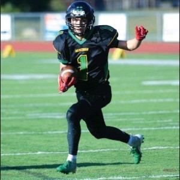
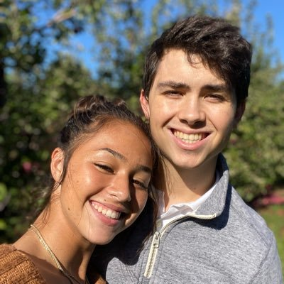
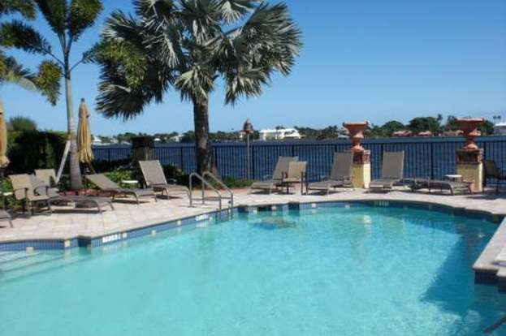

I am Cade Curran, I'm from North Smithfield, Rhode Island. My family consists of me, my brother, and parents. My favorite sport to watch and play is football and my favorite player of all time is Tom Brady. I enjoy the Summer the most because I love the beatiful warm weather and hanging out with friends. As of right now I work for Pizza Express which is reatuarant that sells pizza at the University of Rhode Island. I am a freshman at URI and I am currently sill undeclared but very interested in the computer science field.
  